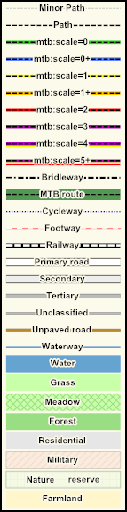

 MTB map based on openstreetmap data. Known limitations: Coverage: Sweden Zoom levels: 9-16 Update interval: ~monthly For more information about mtb tagging, see mtb:scale and mountainbike on openstreetmap wiki. Made by zvenzzon.
This application requires Javascript. Please enable it to view the map.